This vignette is a lean tour of every core pmxhelpr
workflow in a single sitting. Each section ends with a link to the
corresponding deep-dive article on the pmxhelpr website.
Exported functions follow a ReturnType_Purpose naming
convention:
-
plot_*— returns aggplotobject -
df_*— returns adata.frame(often class-tagged) -
var_*— returns a vector (vectorized helpers for use insidemutate()) -
style_*— returns aggstylekit::style_spec()style object
The bundled datasets data_sad and
data_sad_pkfit use ODV (original DV). Examples
below pass dv_var = "ODV" or dv_var = ODV to
highlight the non-standard evaluation (NSE) of dataset column name
variables which may be specified as strings or bare names to override
defaults in pmxhelpr functions.
options(scipen = 999, rmarkdown.html_vignette.check_title = FALSE)
library(pmxhelpr)
library(dplyr, warn.conflicts = FALSE)
library(forcats, warn.conflicts = FALSE)
library(ggplot2, warn.conflicts = FALSE)
library(patchwork, warn.conflicts = FALSE)
library(mrgsolve, warn.conflicts = FALSE)Data
data_sad
data_sad is a NLME modeling analysis-ready dataset for
single ascending dose (SAD) study with a parallel food-effect (FE)
cohort. It contains one oral dose input (EVID=1,
CMT=1) and two observation types (EVID=0):
- Drug concentration in
CMT=2(original units: ng/mL) - Response in
CMT=3(original units: percentage of baseline)
glimpse(data_sad)
#> Rows: 1,404
#> Columns: 25
#> $ ID <dbl> 1, 1, 1, 1, 1, 1, 1, 1, 1, 1, 1, 1, 1, 1, 1, 1, 1, 1, 1, 1, 1,…
#> $ TIME <dbl> 0.00, 0.00, 0.00, 0.48, 0.48, 0.81, 0.81, 1.49, 1.49, 2.11, 2.…
#> $ NTIME <dbl> 0.0, 0.0, 0.0, 0.5, 0.5, 1.0, 1.0, 1.5, 1.5, 2.0, 2.0, 3.0, 3.…
#> $ NDAY <dbl> 1, 1, 1, 1, 1, 1, 1, 1, 1, 1, 1, 1, 1, 1, 1, 1, 1, 1, 1, 1, 1,…
#> $ DOSE <dbl> 10, 10, 10, 10, 10, 10, 10, 10, 10, 10, 10, 10, 10, 10, 10, 10…
#> $ AMT <dbl> 10, NA, NA, NA, NA, NA, NA, NA, NA, NA, NA, NA, NA, NA, NA, NA…
#> $ EVID <dbl> 1, 0, 0, 0, 0, 0, 0, 0, 0, 0, 0, 0, 0, 0, 0, 0, 0, 0, 0, 0, 0,…
#> $ ODV <dbl> NA, NA, 100.00000, NA, 99.87700, 2.02000, 99.44932, 4.02000, 9…
#> $ LDV <dbl> NA, NA, 100.00000, NA, 99.87700, 0.70310, 99.44932, 1.39130, 9…
#> $ CFB <dbl> NA, NA, 0.0000000, NA, -0.1229974, NA, -0.5506789, NA, -2.3928…
#> $ CONC <dbl> NA, NA, 0.00, NA, 0.00, NA, 2.02, NA, 4.02, NA, 3.50, NA, 7.18…
#> $ LINE <dbl> 2, 1, 1, 3, 3, 4, 4, 5, 5, 6, 6, 7, 7, 8, 8, 9, 9, 10, 10, 11,…
#> $ CMT <dbl> 1, 2, 3, 2, 3, 2, 3, 2, 3, 2, 3, 2, 3, 2, 3, 2, 3, 2, 3, 2, 3,…
#> $ MDV <dbl> NA, 1, 1, 1, 1, 0, 0, 0, 0, 0, 0, 0, 0, 0, 0, 0, 0, 0, 0, 0, 0…
#> $ BLQ <dbl> NA, -1, -1, 1, 1, 0, 0, 0, 0, 0, 0, 0, 0, 0, 0, 0, 0, 0, 0, 0,…
#> $ LLOQ <dbl> NA, 1, 1, 1, 1, 1, 1, 1, 1, 1, 1, 1, 1, 1, 1, 1, 1, 1, 1, 1, 1…
#> $ FOOD <dbl> 0, 0, 0, 0, 0, 0, 0, 0, 0, 0, 0, 0, 0, 0, 0, 0, 0, 0, 0, 0, 0,…
#> $ SEXF <dbl> 1, 1, 1, 1, 1, 1, 1, 1, 1, 1, 1, 1, 1, 1, 1, 1, 1, 1, 1, 1, 1,…
#> $ RACE <dbl> 2, 2, 2, 2, 2, 2, 2, 2, 2, 2, 2, 2, 2, 2, 2, 2, 2, 2, 2, 2, 2,…
#> $ AGEBL <int> 25, 25, 25, 25, 25, 25, 25, 25, 25, 25, 25, 25, 25, 25, 25, 25…
#> $ WTBL <dbl> 82.1, 82.1, 82.1, 82.1, 82.1, 82.1, 82.1, 82.1, 82.1, 82.1, 82…
#> $ SCRBL <dbl> 0.87, 0.87, 0.87, 0.87, 0.87, 0.87, 0.87, 0.87, 0.87, 0.87, 0.…
#> $ CRCLBL <dbl> 128, 128, 128, 128, 128, 128, 128, 128, 128, 128, 128, 128, 12…
#> $ USUBJID <chr> "STUDYNUM-SITENUM-1", "STUDYNUM-SITENUM-1", "STUDYNUM-SITENUM-…
#> $ PART <chr> "Part 1-SAD", "Part 1-SAD", "Part 1-SAD", "Part 1-SAD", "Part …The pre-processing step below creates a new variable combining dose,
frequency, and food status into a single dosing regimen variable with
per-group subject counts appended using var_addn().
Separate datasets are also defined for exploration of PK and PD
data.
data <- data_sad %>%
mutate(Food = ifelse(FOOD == 1, "Fed", "Fasted"),
DoseFood = paste(DOSE, "mg x1", Food),
Regimen = var_addn(DoseFood, ID))
data_pk <- data %>% filter(CMT %in% c(1,2))
data_pd <- data %>% filter(CMT %in% c(1,3))
unique(data$Regimen)
#> [1] 10 mg x1 Fasted (n=6) 50 mg x1 Fasted (n=6) 100 mg x1 Fasted (n=6)
#> [4] 100 mg x1 Fed (n=6) 200 mg x1 Fasted (n=6) 400 mg x1 Fasted (n=6)
#> 6 Levels: 10 mg x1 Fasted (n=6) ... 400 mg x1 Fasted (n=6)
data_sad_nca
data_sad_nca contains PK parameters and exposure metrics
from a non-compartmental analysis (NCA) of data_sad using
the PKNCA package.
We will filter to Part 1 fasted conditions only for use in dose-proportionality assessment.
glimpse(data_sad_nca)
#> Rows: 648
#> Columns: 11
#> $ ID <dbl> 1, 1, 1, 1, 1, 1, 1, 1, 1, 1, 1, 1, 1, 1, 1, 1, 1, 1, 2, 2,…
#> $ DOSE <dbl> 10, 10, 10, 10, 10, 10, 10, 10, 10, 10, 10, 10, 10, 10, 10,…
#> $ PART <chr> "Part 1-SAD", "Part 1-SAD", "Part 1-SAD", "Part 1-SAD", "Pa…
#> $ start <dbl> 0, 0, 0, 0, 0, 0, 0, 0, 0, 0, 0, 0, 0, 0, 0, 0, 0, 0, 0, 0,…
#> $ end <dbl> Inf, Inf, Inf, Inf, Inf, Inf, Inf, Inf, Inf, Inf, Inf, Inf,…
#> $ PPTESTCD <chr> "auclast", "cmax", "tmax", "tlast", "clast.obs", "lambda.z"…
#> $ PPORRES <dbl> 277.7701457207, 13.4300000000, 7.8100000000, 35.9500000000,…
#> $ exclude <chr> NA, NA, NA, NA, NA, NA, NA, NA, NA, NA, NA, NA, NA, NA, NA,…
#> $ units_dose <chr> "mg", "mg", "mg", "mg", "mg", "mg", "mg", "mg", "mg", "mg",…
#> $ units_conc <chr> "ng/mL", "ng/mL", "ng/mL", "ng/mL", "ng/mL", "ng/mL", "ng/m…
#> $ units_time <chr> "hours", "hours", "hours", "hours", "hours", "hours", "hour…
data_nca_part1 <- filter(data_sad_nca, PART == "Part 1-SAD")
data_sad_pkfit
data_sad_pkfit is a model output dataset version of
data_sad (CMT=1, 2) with two additional
variables (PRED and IPRED) appended. These
variables are derived from the internal PK model
pkmodel.
pkmodel <- model_mread_load("pkmodel")
see(pkmodel)
#>
#> Model file: pkmodel.cpp
#> $PARAM
#> TVCL = 20
#> TVVC = 35.7
#> TVKA = 0.3
#> TVQ = 25
#> TVVP = 150
#> DOSE_F1 = 0.33
#>
#> WT_CL = 0.75
#> WT_VC = 1.00
#> WT_Q = 0.75
#> WT_VP = 1.00
#> FOOD_KA = -0.5
#> FOOD_F1 = 1.33
#>
#> WT = 70
#> DOSE = 100
#> FOOD = 0
#>
#> $CMT GUT CENT PERIPH TRANS1 TRANS2
#>
#> $MAIN
#> double CL = TVCL*pow(WT/70,WT_CL)*exp(ETA_CL);
#> double VC = TVVC*pow(WT/70, WT_VC)*exp(ETA_VC);
#> double Q = TVCL*pow(WT/70,WT_Q)*exp(ETA_Q);
#> double VP = TVVP*pow(WT/70, WT_VP)*exp(ETA_VP);
#> double KA = TVKA*(1+FOOD_KA*FOOD)*exp(ETA_KA);
#> double F1 = 1*(1+FOOD_F1*FOOD)*pow(DOSE/100,DOSE_F1);
#>
#> F_GUT = F1;
#>
#> $ODE
#> dxdt_GUT = -KA*GUT;
#> dxdt_CENT = KA*TRANS1 - (CL/VC)*CENT + (Q/VP)*PERIPH - (Q/VC)*CENT;
#> dxdt_PERIPH = (Q/VC)*CENT - (Q/VP)*PERIPH;
#> dxdt_TRANS1 = KA*GUT - KA*TRANS1;
#> dxdt_TRANS2 = KA*TRANS1 - KA*TRANS2;
#>
#> $OMEGA @labels ETA_CL ETA_VC ETA_KA ETA_Q ETA_VP
#> 0.075 0.1 0.2 0 0
#>
#> $SIGMA @labels PROP
#> 0.09
#>
#> $TABLE
#> capture IPRED = CENT/(VC/1000);
#> capture DV = IPRED*(1+PROP);
#> capture Y = DV;We will process this dataset in a manner analogous to
data_sad.
Longitudinal concentration and response with
plot_dvtime()
plot_dvtime() produces a longitudinal plot of a repeated
measures, continuous variable versus time. This plotting function can be
used for longitudinal exploratory analysis of both concentration
(CMT = 2) and response (CMT = 3) over time,
with functionality for central tendency, variability, and BLQ
handling.
pk_plot <- plot_dvtime(
data = data_pk,
dv_var = ODV,
cent = "mean_sdl",
col_var = Regimen,
log_y = TRUE,
style = style_dvtime(alphas = c(obs_point = 0))
) +
labs(y = "Concentration (ng/mL)", x = "Time (hours)")
pk_plot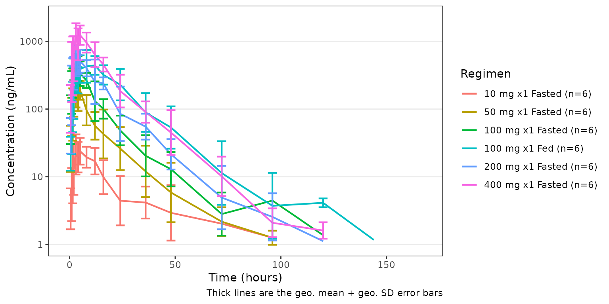
pd_plot <- plot_dvtime(
data = data_pd,
dv_var = "CFB",
cent = "mean_sdl",
col_var = Regimen,
style = style_dvtime(alphas = c(obs_point = 0))
) +
labs(y = "Response (% Change from Baseline)", x = "Time (hours)")
pd_plot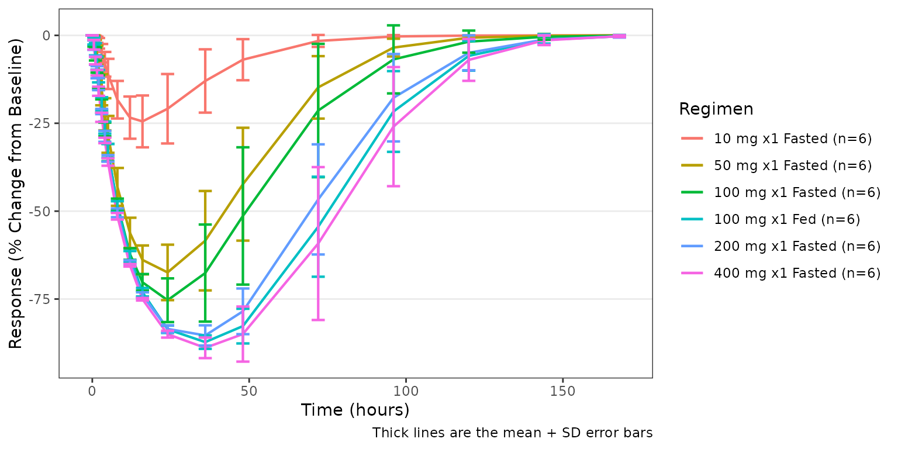
The two plots can be composed into a single paneled figure using thepatchwork package, aligned vertically with the shared time
axis.
(pk_plot / pd_plot) + plot_layout(guides = "collect")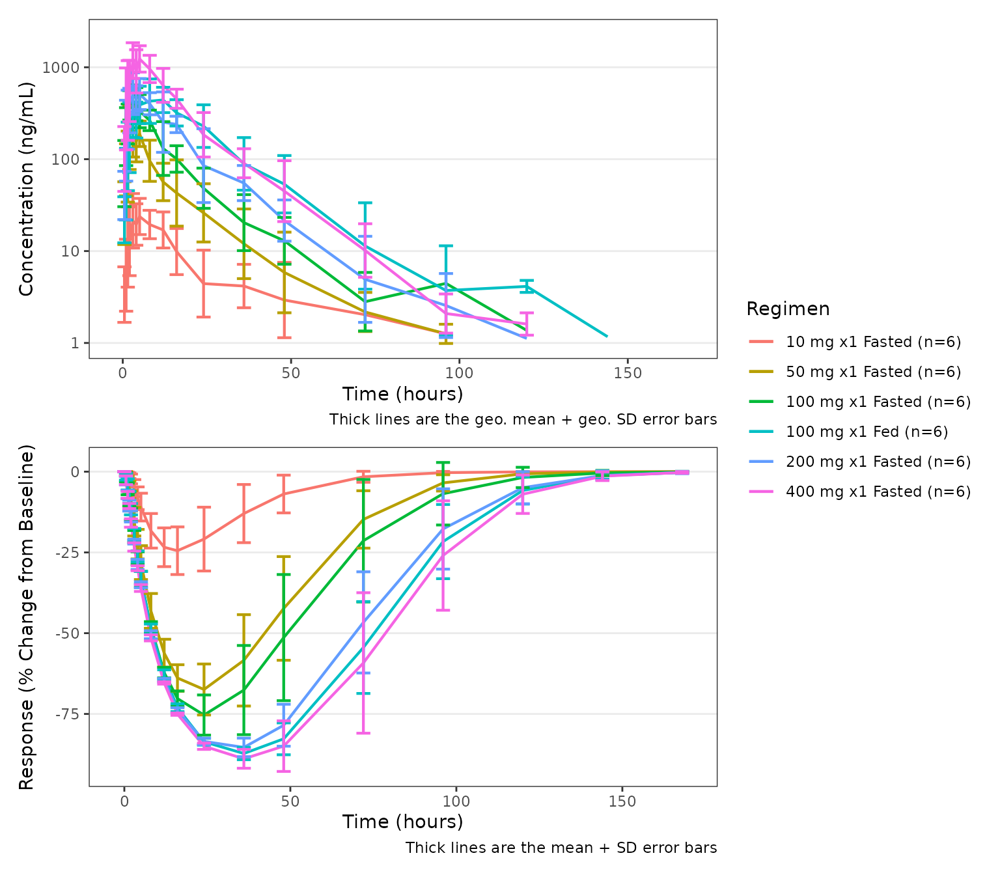
See the Exploratory Analyses of
PK and PK/PD Data article for additional details on exploratory data
analyses with pmxhelpr.
Response versus concentration with plot_dvconc()
plot_dvconc() plots a continuous dependent variable
versus a continuous independent variable. The most common use case is
visualizing a pharmacodynamic response versus drug concentration. Trend
line options include both linear
(linear/se_linear) and non-linear
(loess/se_loess) logical toggles.
A dashed black reference line is drawn at y = ref when
ref is specified.
plot_dvconc(
data = filter(data, CMT == 3),
dv_var = CFB,
idv_var = CONC,
ref = 0,
col_var = Regimen,
loess = TRUE,
linear = TRUE
) +
labs(y = "Response (% Change from Baseline)", x = "Concentration (ng/mL)")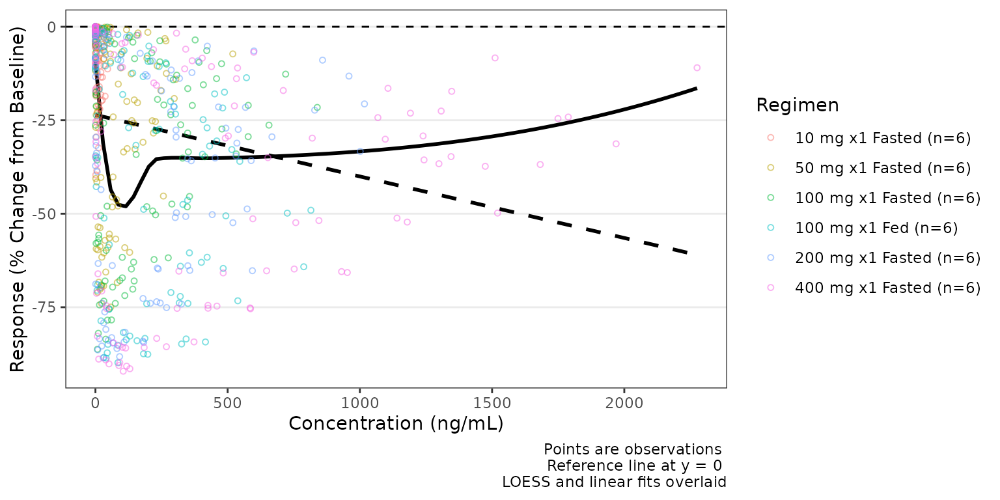
By default the trend lines are not grouped by the variable passed to
col_var; however, this can be toggled on with
col_trend=TRUE.
plot_dvconc(
data = filter(data, CMT == 3),
dv_var = CFB,
idv_var = CONC,
ref = 0,
col_var = Regimen,
loess = TRUE,
se_loess = TRUE,
linear = FALSE,
col_trend = TRUE
) +
labs(y = "Response (% Change from Baseline)", x = "Concentration (ng/mL)")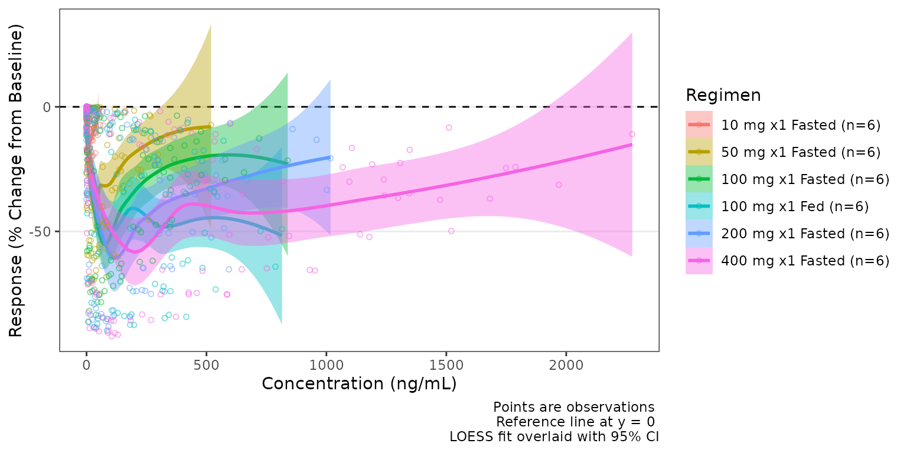
See the Exploratory Analyses of
PK and PK/PD Data article for additional details on exploratory data
analyses with pmxhelpr.
Dose-proportionality with df_doseprop() and
plot_doseprop()
df_doseprop() fits a log-log regression of exposure
metrics (e.g., Cmax and AUC) versus dose and returns a class-tagged
doseprop_stats data frame.
tab <- df_doseprop(data_nca_part1, metrics = c("aucinf.obs", "cmax"))
tab
#> <doseprop_stats>
#> stats: 2 rows x 10 columns
#> obs: 60 rows
#> config: metric_name_var = PPTESTCD, metric_value_var = PPORRES, dose_var = DOSE, ci = 0.9, method = normal
#>
#> stats body:
#> Intercept StandardError CI Power LCL UCL Proportional
#> 1 3.97 0.0438 90% 0.979 0.907 1.05 TRUE
#> 2 1.06 0.0616 90% 1.060 0.959 1.16 TRUE
#> PowerCI Interpretation PPTESTCD
#> 1 Power: 0.979 (90% CI 0.907-1.05) Dose-proportional aucinf.obs
#> 2 Power: 1.06 (90% CI 0.959-1.16) Dose-proportional cmax
#>
#> Use `x$obs` for the observation overlay.plot_doseprop() can directly process an NCA input
dataset (1-stage) or accept a previously processed
doseprop_stats object (2-stage)
- One-stage: raw NCA
data.frameinput (df_doseprop()called internally)
plot_doseprop(data_nca_part1, metrics = c("aucinf.obs", "cmax"))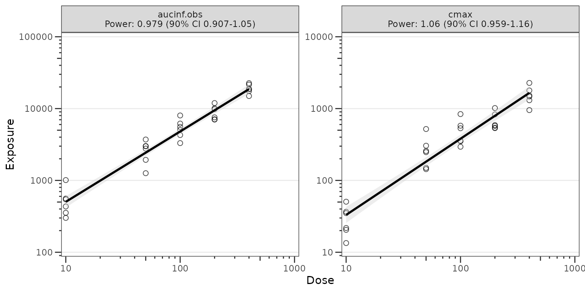
- Two-stage: a
doseprop_statsobject (computed separately withdf_doseprop()
plot_doseprop(tab)
See the Dose-Proportionality
Workflow article for additional details on dose-proportionality
assessment with pmxhelpr.
Model diagnostics with plot_gof()
plot_gof() produces a population overlay goodness-of-fit
(GOF) plot depicting binned central tendency layers of observed values
(dv), individual predictions (ipred), and
population predictions (pred) over time along with the
underlying observed data (obs) scatter.
In most cases, these plots will be drawn using model output tables
directly from estimation engines (e.g., NONMEM), which will only include
predictions at non-missing timepoints included in parameter estimation
(e.g., MDV=0). The input dataset data_gof (derived from
data_sad_pkfit) includes model predictions from
mrgsolve::mrgsim() at all timepoints; therefore, we will
filter on input to mimic this common scenario.
plot_gof(data = filter(data_gof, MDV == 0), dv_var = ODV, log_y = TRUE) +
facet_wrap(~Regimen) +
scale_x_continuous(limits = c(0, 168), breaks = c(0, 24, 72, 120, 168))+
labs(y = "Concentration (ng/mL)", x = "Time (hours)")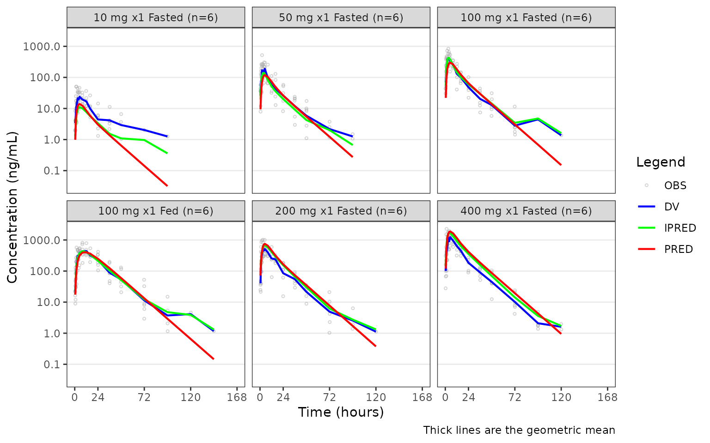
See the Goodness-of-Fit Diagnostics article for additional details on GOF diagnostics.
VPC model evaluation with plot_vpc_cont() and
plot_vpc_cens()
The VPC workflow is an end to end process within
pmxhelpr, starting from a fitted model that has been
translated to an mrgsolve model format
(mrgmod).
From a validated model file, the VPC pipeline includes functionality to:
- replicate the input dataset with
df_mrgsim_replicate() - derive summary statistics within and across replicates with
df_vpcstats() - build plots with
plot_vpc_cont()/plot_vpc_cens()
Run the simulation with df_mrgsim_replicate()
df_mrgsim_replicate() is a wrapper function for
mrgsim::mrgsim_df(), which uses lapply() to
iterate from 1 to the integer value passed to replicates.
This can be parallelized using
future.apply::future_lapply() when
parallel = TRUE and a corresponding
future::plan() is in place.
There are 3 required arguments to
df_mrgsim_replicate():
-
data, adata.framemodeling analysis dataset -
model, amrgmodmodel object -
replicates, integer number of replicates to perform.
The are optional arguments specifying key dataset variables to be input into the simulation or captured in output. These include:
-
dv_var= DV, dependent variable -
time_var= TIME, actual time variable -
ntime_var= NTIME, nominal time variable -
pred_var= PRED, population prediction variable -
ipred_var= IPRED, individual prediction variable -
sim_dv_var= DV, dependent variable captured in the simulated output
simout <- df_mrgsim_replicate(
data = data_pk,
model = pkmodel,
replicates = 100,
dv_var = "ODV",
sim_dv_var = DV,
carry_out = c("DOSE", "FOOD", "BLQ", "LLOQ"),
recover = c("PART", "Regimen")
)
glimpse(simout)
#> Rows: 72,000
#> Columns: 23
#> $ ID <dbl> 1, 1, 1, 1, 1, 1, 1, 1, 1, 1, 1, 1, 1, 1, 1, 1, 1, 1, 1, 1, 2,…
#> $ TIME <dbl> 0.00, 0.00, 0.48, 0.81, 1.49, 2.11, 3.05, 4.14, 5.14, 7.81, 12…
#> $ NTIME <dbl> 0.0, 0.0, 0.5, 1.0, 1.5, 2.0, 3.0, 4.0, 5.0, 8.0, 12.0, 16.0, …
#> $ PRED <dbl> 0.0000000000, 0.0000000000, 1.0373644222, 2.4699025938, 5.8692…
#> $ IPRED <dbl> 0.00000000000, 0.00000000000, 0.23991271053, 0.58097762508, 1.…
#> $ SIMDV <dbl> 0.00000000000, 0.00000000000, 0.27955022508, 0.74917139938, 1.…
#> $ OBSDV <dbl> NA, NA, NA, 2.02, 4.02, 3.50, 7.18, 9.31, 12.46, 13.43, 12.11,…
#> $ EVID <dbl> 1, 0, 0, 0, 0, 0, 0, 0, 0, 0, 0, 0, 0, 0, 0, 0, 0, 0, 0, 0, 1,…
#> $ CMT <dbl> 1, 2, 2, 2, 2, 2, 2, 2, 2, 2, 2, 2, 2, 2, 2, 2, 2, 2, 2, 2, 1,…
#> $ MDV <dbl> NA, 1, 1, 0, 0, 0, 0, 0, 0, 0, 0, 0, 0, 0, 1, 1, 1, 1, 1, 1, N…
#> $ DOSE <dbl> 10, 10, 10, 10, 10, 10, 10, 10, 10, 10, 10, 10, 10, 10, 10, 10…
#> $ FOOD <dbl> 0, 0, 0, 0, 0, 0, 0, 0, 0, 0, 0, 0, 0, 0, 0, 0, 0, 0, 0, 0, 0,…
#> $ BLQ <dbl> NA, -1, 1, 0, 0, 0, 0, 0, 0, 0, 0, 0, 0, 0, 1, 1, 1, 1, 1, 1, …
#> $ LLOQ <dbl> NA, 1, 1, 1, 1, 1, 1, 1, 1, 1, 1, 1, 1, 1, 1, 1, 1, 1, 1, 1, N…
#> $ GUT <dbl> 4.67735141287198175, 4.67735141287198175, 4.34652773939926984,…
#> $ CENT <dbl> 0.000000000000, 0.000000000000, 0.009786371098, 0.023698880423…
#> $ PERIPH <dbl> 0.00000000000, 0.00000000000, 0.00080390625, 0.00337854545, 0.…
#> $ TRANS1 <dbl> 0.0000000000000000, 0.0000000000000000, 0.3188382667608536, 0.…
#> $ TRANS2 <dbl> 0.00000000000000, 0.00000000000000, 0.01169414527583, 0.031663…
#> $ Y <dbl> 0.00000000000, 0.00000000000, 0.27955022508, 0.74917139938, 1.…
#> $ PART <chr> "Part 1-SAD", "Part 1-SAD", "Part 1-SAD", "Part 1-SAD", "Part …
#> $ Regimen <fct> 10 mg x1 Fasted (n=6), 10 mg x1 Fasted (n=6), 10 mg x1 Fasted …
#> $ SIM <int> 1, 1, 1, 1, 1, 1, 1, 1, 1, 1, 1, 1, 1, 1, 1, 1, 1, 1, 1, 1, 1,…Calculate summary statistics with df_vpcstats()
df_vpcstats performs the input data validation and
summary statistic calculations for the VPC, returning a
vpc_stats S3 container including:
-
$stats(data.frameof summary statistics) -
$obsobserved data for scatter plot overlay -
$configconfiguration info (e.g., replicates, loq, stratifying variable).
vpc_stats objects contain both standard,
prediction-correction, and proportion BLQ statistics and may be passed
directly to plot_vpc_cont() or plot_vpc_cens()
following a 2-stage workflow. Both plotting functions can also take in
the raw simulated output and call df_vpcstats() internally
in a one-stage workflow.
vpcstats_obj_part <- df_vpcstats(simout, strat_var = PART)
#> Inheriting per-row `loq` from `LLOQ` column in `data`.
vpcstats_obj_regimen <- df_vpcstats(simout, strat_var = Regimen)
#> Inheriting per-row `loq` from `LLOQ` column in `data`.
vpcstats_obj_part
#> <vpc_stats>
#> stats: 38 rows x 35 columns
#> obs: 515 rows
#> config: n_replicates = 100, loq = 1, strat_var = PART
#> column groups (stats):
#> identifiers : BIN_MID, PART
#> counts : obs_n, obs_n_blq, obs_prop_blq
#> sim BLQ : sim_prop_blq_low, sim_prop_blq_med, sim_prop_blq_hi [std-only]
#> std observed : obs_low, obs_med, obs_hi
#> std simulated: sim_low_low, sim_low_med, sim_low_hi, sim_med_low, sim_med_med, sim_med_hi, sim_hi_low, sim_hi_med, sim_hi_hi
#> pc observed : pc_obs_low, pc_obs_med, pc_obs_hi
#> pc simulated : pc_sim_low_low, pc_sim_low_med, pc_sim_low_hi, pc_sim_med_low, pc_sim_med_med, pc_sim_med_hi, pc_sim_hi_low, pc_sim_hi_med, pc_sim_hi_hi
#> metadata : ci, pi_low, pi_hi
#>
#> head(stats, 3):
#> # A tibble: 3 × 35
#> BIN_MID PART obs_n obs_n_blq obs_prop_blq sim_prop_blq_low sim_prop_blq_med
#> <dbl> <chr> <int> <int> <dbl> <dbl> <dbl>
#> 1 0 Part 1… 30 30 1 1 1
#> 2 0 Part 2… 6 6 1 1 1
#> 3 0.5 Part 1… 30 2 0.0667 0.0667 0.133
#> # ℹ 28 more variables: sim_prop_blq_hi <dbl>, obs_low <dbl>, obs_med <dbl>,
#> # obs_hi <dbl>, sim_low_low <dbl>, sim_low_med <dbl>, sim_low_hi <dbl>,
#> # sim_med_low <dbl>, sim_med_med <dbl>, sim_med_hi <dbl>, sim_hi_low <dbl>,
#> # sim_hi_med <dbl>, sim_hi_hi <dbl>, pc_obs_low <dbl>, pc_obs_med <dbl>,
#> # pc_obs_hi <dbl>, pc_sim_low_low <dbl>, pc_sim_low_med <dbl>,
#> # pc_sim_low_hi <dbl>, pc_sim_med_low <dbl>, pc_sim_med_med <dbl>,
#> # pc_sim_med_hi <dbl>, pc_sim_hi_low <dbl>, pc_sim_hi_med <dbl>, …
#>
#> Use `x$stats` and `x$obs` for the underlying data.frames.Plotting the continuous data range with
plot_vpc_cont
plot_vpc_cont() builds standard or prediction-corrected
VPCs of the continuous, quantifiable range above the LLOQ.
The example below is a standard (non-prediction-corrected) VPC
stratified by Regimen.
vpc_regimen <- plot_vpc_cont(
data = simout,
strat_var = Regimen
) +
scale_x_continuous(breaks = seq(0, 168, 24)) +
scale_y_log10(guide = "axis_logticks") +
labs(x = "Time (hours)", y = "Concentration (ng/mL)")
vpc_regimen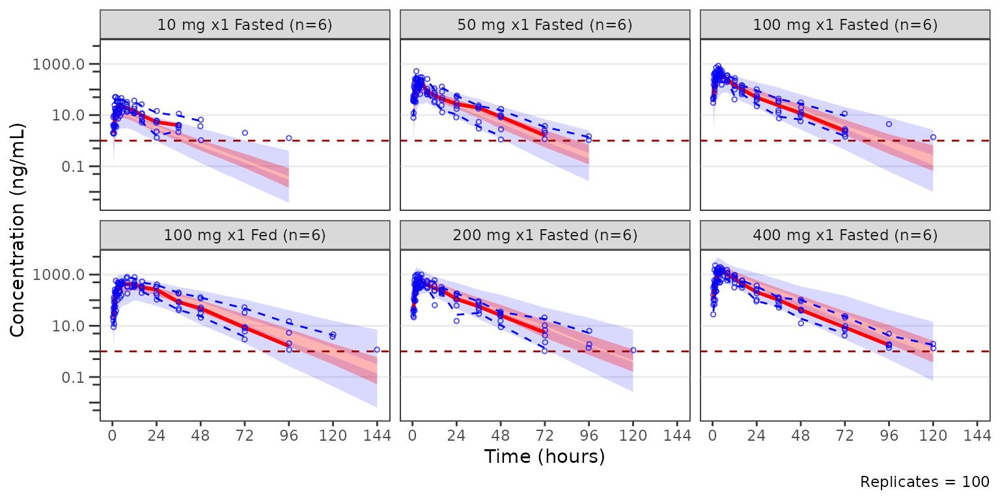
The example below is a pcVPC stratified by PART.
pcvpc_part <- plot_vpc_cont(
data = simout,
strat_var = PART,
pcvpc = TRUE
) +
scale_x_continuous(breaks = seq(0, 168, 24)) +
scale_y_log10(guide = "axis_logticks") +
labs(x = "Time (hours)", y = "Pred-corrected Conc. (ng/mL)")
pcvpc_part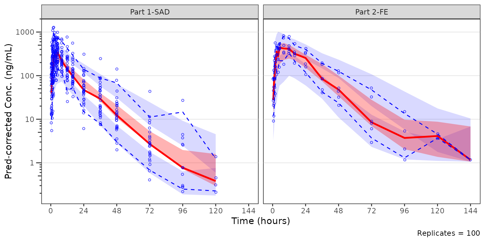
## Plotting the censored data range withplot_vpc_cens
plot_vpc_cens() is the companion diagnostic for the
censored portion of the data range. It mirrors
plot_vpc_cont() but plots obs_prop_blq and the
non-parametric confidence band of sim_prop_blq across
replicates. VPC plots of the censored data range should be generated
prior to prediction-corrected VPCs (pcVPCs) to ensure that the model is
adequately predictive of the censored data range prior to generating
pcVPCs of the quantifiable data range.
The most relevant censored VPC is that stratified by dose and food
status, which are combined in the Regimen variable.
cens_vpc_regimen <- plot_vpc_cens(
data = simout,
strat_var = Regimen,
loq = 1
) +
scale_x_continuous(breaks = seq(0, 168, 24)) +
labs(x = "Time (hours)", y = "Proportion BLQ")
cens_vpc_regimen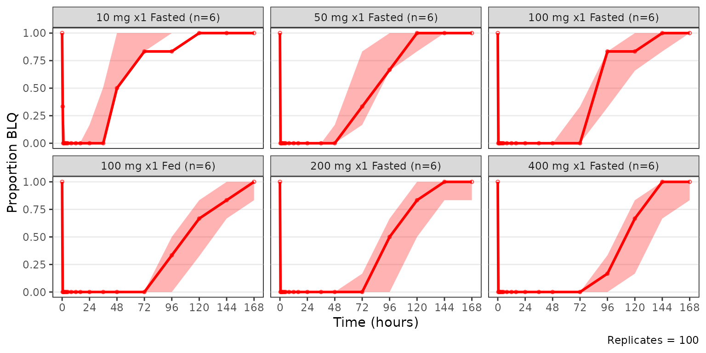
Adding a panels and legends with patchwork and
plot_vpc_legend()
plot_vpc_legend() returns a legend that can be combined
with the VPC plots using the patwork package. The four row
layout below stacks the continuous and censored VPCs with their
corresponding legends.
The two-stage plot building from avpc_stats objects is
also demonstrated, highlighting the potential efficiencies of reusing a
pre-computed object.
vpc_plot_cont <- plot_vpc_cont(vpcstats_obj_regimen) +
scale_x_continuous(breaks = seq(0, 168, 24)) +
scale_y_log10(guide = "axis_logticks") +
labs(x = "Time (hours)", y = "Concentration (ng/mL)")
vpc_plot_cens <- plot_vpc_cens(vpcstats_obj_regimen) +
scale_x_continuous(breaks = seq(0, 168, 24)) +
labs(x = "Time (hours)", y = "Proportion BLQ")
cont_legend <- plot_vpc_legend()
cens_legend <- plot_vpc_legend(type = "cens", shown = plot_vpc_shown(obs_point = FALSE))
vpc_plot_cont / cont_legend / vpc_plot_cens / cens_legend +
plot_layout(heights = c(2, 0.5, 1, 0.5))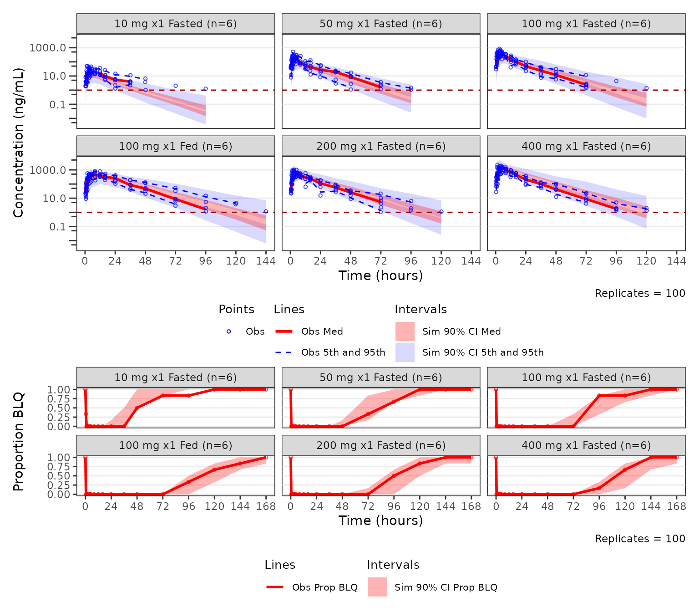
See the Visual Predictive Check
Workflow article for additional details on the VPC toolchain with
pmxhelpr.
Plot themes with ggstylekit
pmxhelpr leverages the functionality of the
ggstylekit package to control the styling of plot
elements.
Every plot_*() function ships with a companion
style_*() helper function that returns a
ggstylekit::style_spec() object pre-filled with the
defaults. The defaults styling for each plot type can be visualized by
calling the function with no arguments
style_dvtime()
#> <ggstylekit_style_spec>
#> colors NULL
#> fill NULL
#> linetypes solid , solid , dashed, dashed
#> alphas 0.5, 0.5, 0.0, 1.0, 1.0, 1.0, 1.0
#> shapes 1, 16
#> sizes 0.75, 1.25
#> linewidths 0.50, 0.75, 0.75, 0.50, 0.50
#> point_color NULL
#> point_alpha NULL
#> point_size NULL
#> point_shape NULL
#> line_color NULL
#> line_alpha NULL
#> line_linetype NULL
#> line_linewidth NULL
#> line_fill NULL
#> errorbar_color NULL
#> errorbar_alpha NULL
#> errorbar_linetype NULL
#> errorbar_linewidth NULL
#> errorbar_width NULL
#> errorbar_fill NULL
#> bar_fill NULL
#> bar_color NULL
#> bar_alpha NULL
#> bar_linewidth NULL
#> area_fill NULL
#> area_color NULL
#> area_alpha NULL
#> area_linewidth NULL
#> box_fill NULL
#> box_color NULL
#> box_alpha NULL
#> box_linewidth NULL
#> title NULL
#> xlabel NULL
#> ylabel NULL
#> xlims NULL
#> ylims NULL
#> logx NULL
#> logy NULL
#> xbreaks NULL
#> ybreaks NULL
#> xminor_breaks NULL
#> yminor_breaks NULL
#> xtick_labels NULL
#> ytick_labels NULL
#> xorder NULL
#> yorder NULL
#> equal_axis NULL
#> legends NULL
#> legend.position NULL
#> legend.title.position top
#> legend_nrow NULL
#> legend_ncol NULL
#> legend.title.hjust NULL
#> caption_hjust NULL
#> fill_alpha NULL
#> facet NULL
#> facet_scales NULL
#> facet_nrow NULL
#> facet_ncol NULL
#> theme <ggplot2 theme>Styling is keyed by roles (e.g. obs_point,
cent_line, cent_errorbar,
ref_line, loq_line). The values for
each key are individual plot aesthetics (e.g, colors,
shapes, sizes, linetypes,
linewidths, alphas) with partial overrides
merge onto the defaults so setting one role leaves the others
untouched.
New styles can be defined as an object and recycled across plots. This revised style object removes the observed points and increases the linewidth of the central tendency line and error bars.
new_dvtime_style <- style_dvtime(
alphas = c(obs_point = 0),
linewidths = c(cent_line = 1.5, cent_errorbar = 1.5)
)
new_dvtime_style
#> <ggstylekit_style_spec>
#> colors NULL
#> fill NULL
#> linetypes solid , solid , dashed, dashed
#> alphas 0.0, 0.5, 0.0, 1.0, 1.0, 1.0, 1.0
#> shapes 1, 16
#> sizes 0.75, 1.25
#> linewidths 0.5, 1.5, 1.5, 0.5, 0.5
#> point_color NULL
#> point_alpha NULL
#> point_size NULL
#> point_shape NULL
#> line_color NULL
#> line_alpha NULL
#> line_linetype NULL
#> line_linewidth NULL
#> line_fill NULL
#> errorbar_color NULL
#> errorbar_alpha NULL
#> errorbar_linetype NULL
#> errorbar_linewidth NULL
#> errorbar_width NULL
#> errorbar_fill NULL
#> bar_fill NULL
#> bar_color NULL
#> bar_alpha NULL
#> bar_linewidth NULL
#> area_fill NULL
#> area_color NULL
#> area_alpha NULL
#> area_linewidth NULL
#> box_fill NULL
#> box_color NULL
#> box_alpha NULL
#> box_linewidth NULL
#> title NULL
#> xlabel NULL
#> ylabel NULL
#> xlims NULL
#> ylims NULL
#> logx NULL
#> logy NULL
#> xbreaks NULL
#> ybreaks NULL
#> xminor_breaks NULL
#> yminor_breaks NULL
#> xtick_labels NULL
#> ytick_labels NULL
#> xorder NULL
#> yorder NULL
#> equal_axis NULL
#> legends NULL
#> legend.position NULL
#> legend.title.position top
#> legend_nrow NULL
#> legend_ncol NULL
#> legend.title.hjust NULL
#> caption_hjust NULL
#> fill_alpha NULL
#> facet NULL
#> facet_scales NULL
#> facet_nrow NULL
#> facet_ncol NULL
#> theme <ggplot2 theme>
plot_dvtime(
data = data_pk,
dv_var = ODV,
cent = "mean_sdl",
col_var = "Regimen",
log_y = TRUE,
style = new_dvtime_style
) +
labs(y = "Concentration (ng/mL)", x = "Time (hours)")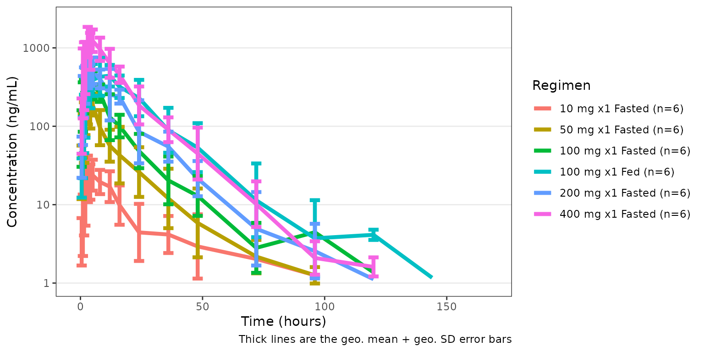
A finished plot object can also be restyled after the fact with
restyle_plot(). Additionally, variables can be surfaced and
mapped to aesthetics after the fact with reveal(). Both are
re-exported from ggstylekit.
See the Plot Styling and Aesthetics
article for additional details on plot styling with
pmxhelpr.